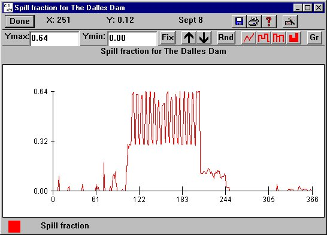

Spill opens a spill fraction histogram at the specified dam for viewing only. Spill refers to water that flows over the top of the dam.
Spill opens a spill fraction histogram at the specified dam for viewing only. Spill refers to water that flows over the top of the dam.
Selecting a Dam from DamSpill opens a spill fraction histogram at the specified dam for viewing only. Spill refers to water that flows over the top of the dam.
Caution. Care must be taken to distinguish between the displayed day-averaged spill percentage (this window) and the percentage of instantaneous flow that is to be spilled during spill hours (set in the Spill Schedule windows).
This is a Julian Day Output window.

Spill Fraction for The Dalles Dam